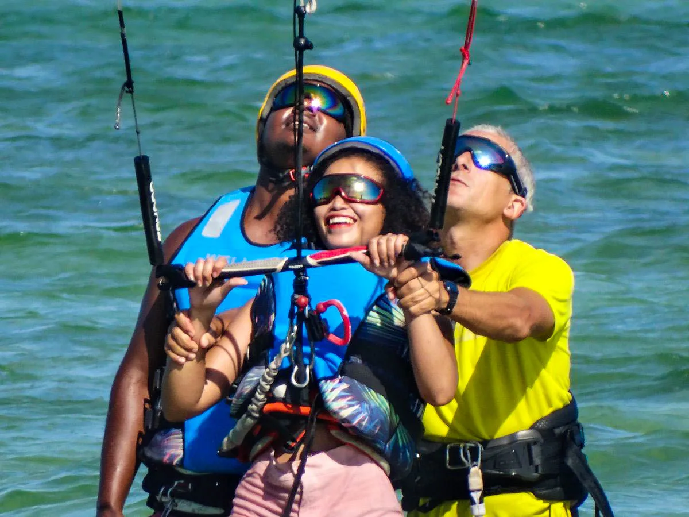
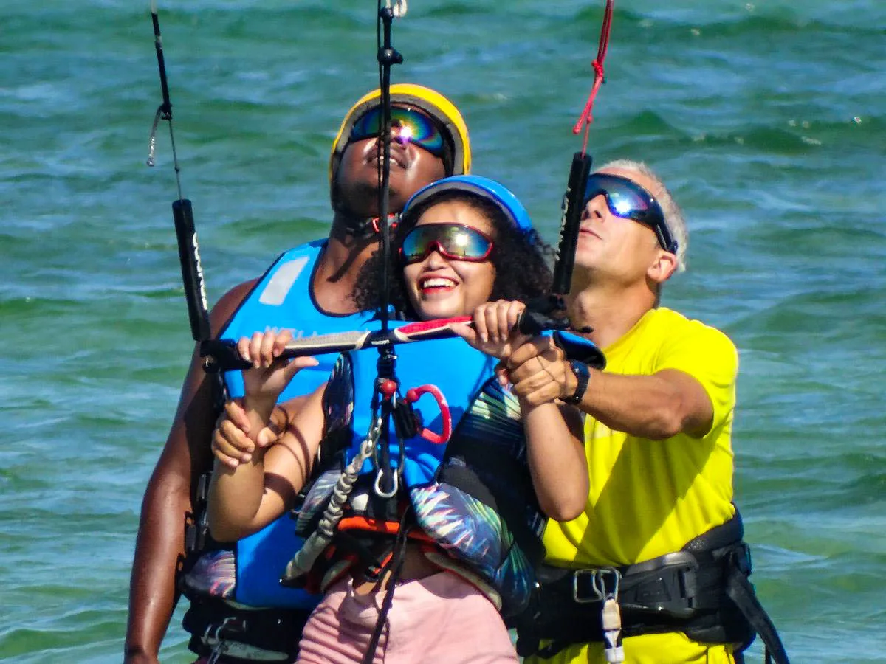
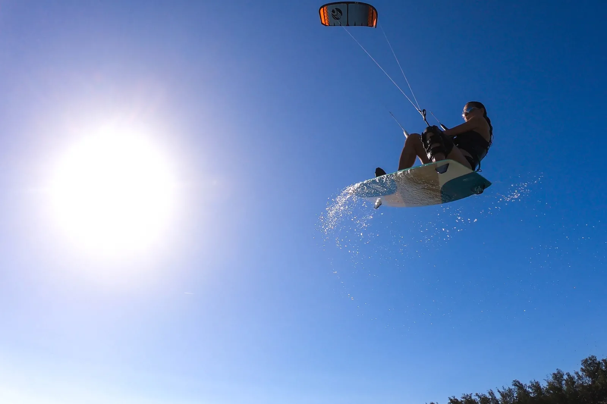
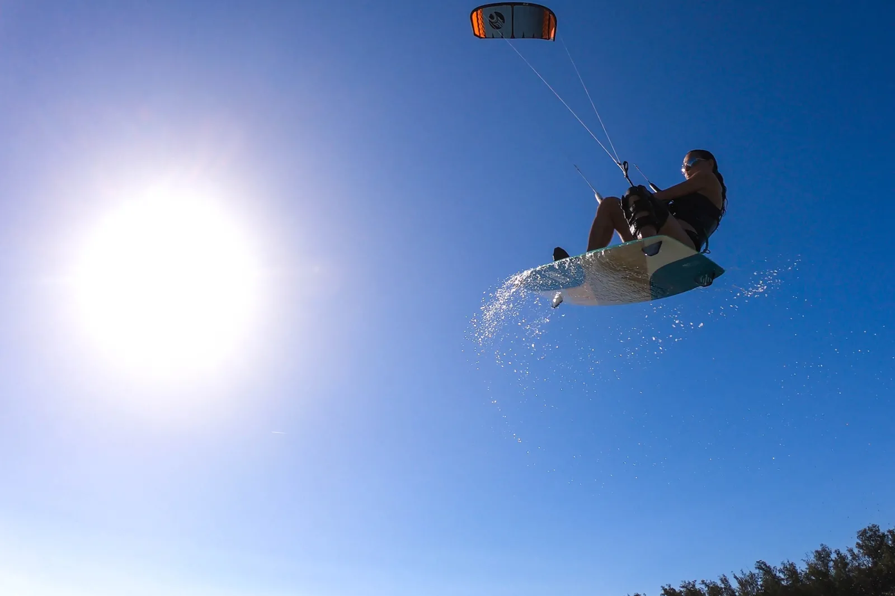

KiteSchool in Bilene, Mozambique
Professionnal, secured, fun and easy
Kite School
Ideally located on the lagoon, with regular side-on winds, the school benefits from ideal conditions to learn kiteboarding. With more than 8 years of experience teaching kitesurfing as an IKO instructor, we offer a complete pedagogy around its standards. They guarantee safe learning in the best conditions for students. We are equipped with radio to allow you to stay in constant contact with your instructor. More info about the spot


Beginners - Discovery
Discover the equipment, safety systems, take-off and landing, complete static wing control in less than 1m of water. Then we will practice body dragging, kite relaunch, first waterstarts and first edges in the lagoon.
 

Intermediaries
Equipped with radio, improve your position, speed control, downwind and upwind. Then will come the first transitions and jibes to never stop when changing direction. Depending on your wishes, we can deepen your knowledge of safety, weather, knowledge of natural and technical elements to strengthen your autonomy in navigation.


Supervised riding
From a certain level, your progress will go through intense practice in supervised semi-autonomy from the the beach, with or without radio. Your instructor will never be far away for your safety and some good advice, without spending more than you need to enjoy kiting.

Advanced : Coaching
For any independent rider who wants to progress: Jumps, figures, transitions, knowledge and advanced settings of your equipment, in Twintip (classic boards), Strapless (surfboard) or foil, kitesurfing has the advantage of a multitude of types of practice, adapted to the conditions or motivations of each. We will use video analysis, radios on the water, you will be supervised by an OLK certified instructor. OLK, the largest French network of schools abroad: More info on OLK. OLK provides free instructional videos to help you continue learning from home.


Coaching course
Lasting one week on average, adaptable according to your desires (we do not forget that you are also on vacation), we offer a complete kite training course. From the most advanced adjustments to the most "stylish" tricks, through learning the tiniest sensations with your kite that make all the difference, this course is aimed at enthusiasts who wish to increase their level on water. : Video briefings, multiple sessions filmed on the water, video debriefing and daily improvement of your style on the water.
 

Equipement : Eleveight
Bilene Kite Center is a partner of Eleveight, the rising kite brand, created by enthusiasts riders, for enthusiasts riders. Our center offers a complete range of new vintage kites, bars and boards, renewed every year. In 2022, the wing is entering into our quiver. More information about Eleveight